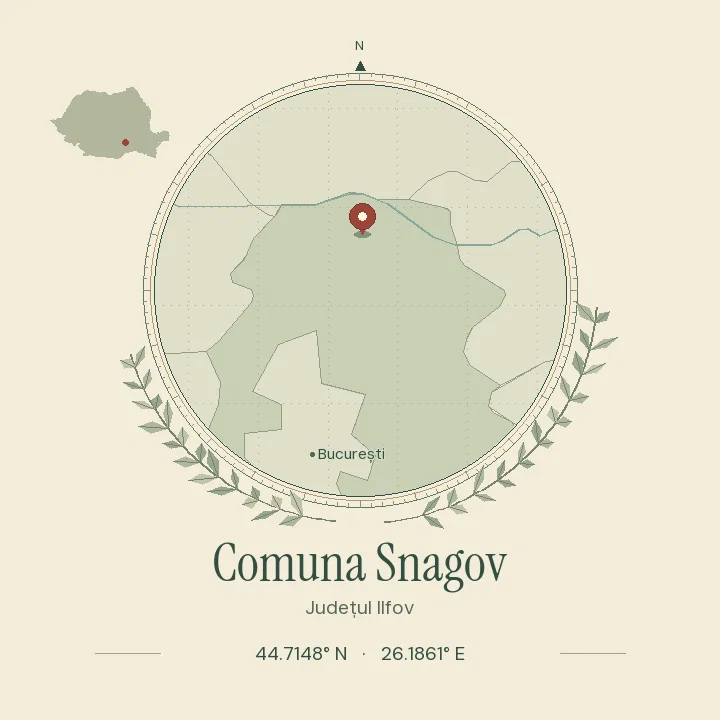
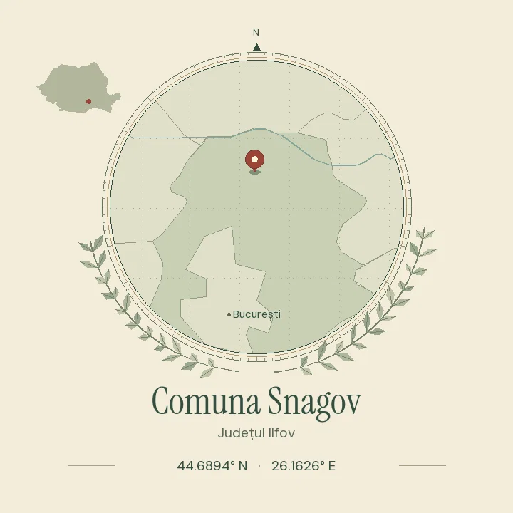
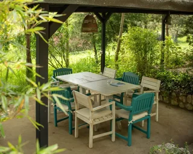

Locații de nuntă în Comuna Snagov
- locații în director
- 4
- medie ponderată Google
- 4,5 / 5
- evaluări Google
- 2.652
Cum alegi o locație în Comuna Snagov
În Comuna Snagov poți începe comparația cu Sura cu Nuferi (local pentru evenimente), Lagoo Snagov (local pentru evenimente), Lagoo Garden & Grill (restaurant). Aceste proprietăți apar în primele poziții când luăm în calcul împreună nota și numărul de evaluări Google. Salvează adresele care vă interesează pentru a le așeza apoi alături în fișa de comparare a ofertelor.
Pentru partea de afară, avem o descriere a spațiului folosit la evenimente la Lagoo Snagov — Cununie în grădină pe malul lacului. La vizionare, cere schița pentru numărul vostru de persoane, inclusiv locul unde vor sta muzicienii și pe unde intră invitații.
Pentru invitații care rămân peste noapte, în apropiere de Sura cu Nuferi apare în evidența turistică și Helikon din Snagov. Distanța măsurată între repere este de 0,3 km în linie dreaptă. Verifică traseul de întoarcere și rezervă camerele separat dacă oferta locației nu cuprinde cazare.
Dacă vrei să vezi două proprietăți în aceeași zi, poți continua de la Lagoo Snagov spre Flying Fox Secret Garden din Snagov. Punctele lor sunt la 0,4 km în linie dreaptă. Deschide traseul înainte să fixezi ora celei de-a doua vizite, mai ales dacă grupul se deplasează cu autocarul.
Locații pentru vizionare
Ordinea ține cont de nota Google și de numărul evaluărilor. Cum calculăm ordinea

Hartă ilustrată Comuna Snagov · Local pentru evenimente
Sura cu Nuferi
Sura cu Nuferi. Un părinte care a participat la o nuntă restrânsă la Șura cu Nuferi își amintește că putea vedea din restaurant jocul copiilor.
Str. Gorunului 14, 077165 Comuna Snagov+40 741 233 110
Hartă ilustrată Comuna Snagov · Local pentru evenimente
Lagoo Snagov
Lagoo Snagov, Comuna Snagov. Un cuplu care și-a ținut nunta în iulie la Lagoo precizează numele pavilionului: Sole.
DJ101B, 077165 Comuna Snagov+40 770 282 344
Fotografie a locației · Sursa fotografiei Comuna Snagov · Restaurant
Lagoo Garden & Grill
Lagoo Garden & Grill, Comuna Snagov. La Lagoo, un vizitator venit la prânz descrie o pajiște și promenada de lângă debarcader.
077165 Comuna Snagov+40 753 627 183
Fotografie a locației · Sursa fotografiei Comuna Snagov · Hotel
Casa Vlasia
Domeniu în Snagov cu lac, vie, cramă și piscină. Evenimentele mari au dus la parcare plină; verifică ce include pachetul și ce altceva are loc.
Str. Codrii Vlăsiei numarul 2, 077165 Comuna Snagov+40 21 794 1787
Întrebări despre locațiile din Comuna Snagov
Ce spații sunt documentate pentru evenimente în aer liber în Comuna Snagov?
Lagoo Snagov — Cununie în grădină pe malul lacului.
Care locație din Comuna Snagov are cele mai multe evaluări Google?
Casa Vlasia are 1.641 de evaluări în profilul Google folosit la documentare. Evaluările acoperă și alte experiențe la proprietate, inclusiv vizitele fără eveniment.
Unde apare o intrare accesibilă în Comuna Snagov?
Profilurile Google indică o intrare accesibilă la Sura cu Nuferi, Lagoo Snagov, Lagoo Garden & Grill. Pentru o cununie în exterior, cere detalii despre traseul dintre intrare și zona cu scaune.
Ce alte localități pot include într-o vizionare lângă Comuna Snagov?
Cele mai apropiate adrese comparate pe hartă sunt în Snagov, Izvorani, Siliștea Snagovului. Găsești mai jos distanțele dintre proprietățile folosite pentru această comparație.
Vizionări în apropiere
- Snagov · 9 locații. Între Lagoo Snagov și Flying Fox Secret Garden sunt 0,4 km în linie dreaptă.
- Izvorani · 1 locație. Între Lagoo Garden & Grill și ASTERIA Lac Snagov sunt 2,0 km în linie dreaptă.
- Siliștea Snagovului · 2 locații. Între Sura cu Nuferi și Palatul Ginga sunt 2,1 km în linie dreaptă.
Alte adrese din aceeași unitate administrativă
Club Snagov (Snagov), Flying Fox Secret Garden (Snagov), Grădina Snagov (Snagov), Gradinile Jolie (Tâncăbești), Heaven By The Lake (Snagov), Jubile By The Lake (Snagov), Snagov Lake Events (Snagov), Snagov Mansion (Snagov), Artha Park - In timpul saptamanii inchirierea exclusiv online (Snagov), Casa Radu Snagov (Snagov), Locații evenimente Evergreen Snagov (Tâncăbești).